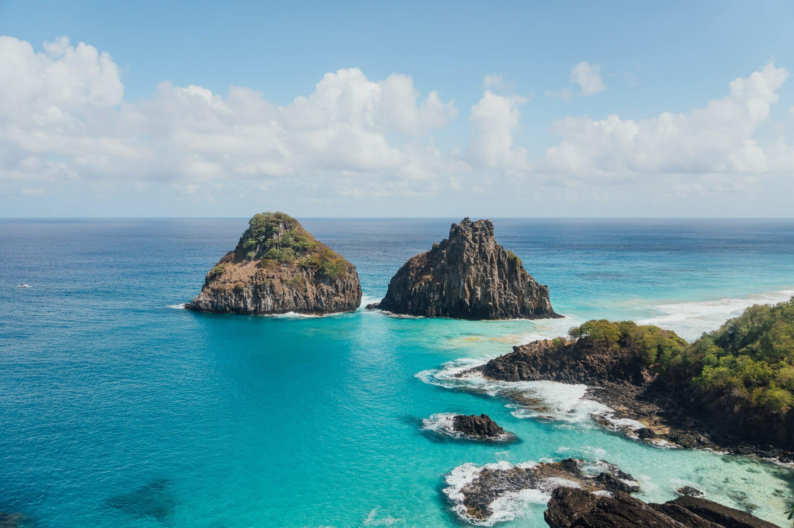
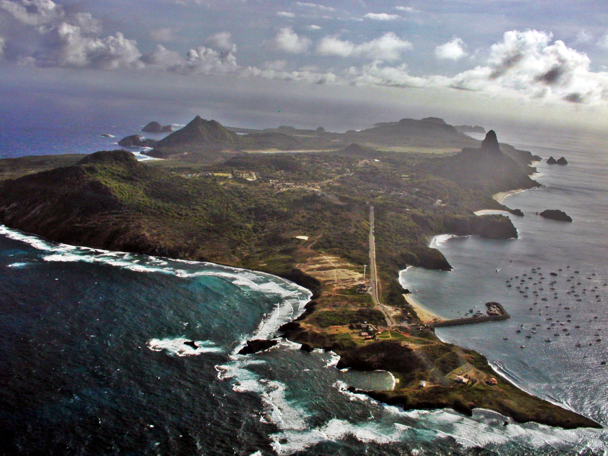

Sobre Fernando de Noronha
Fernando de Noronha é um arquipélago brasileiro do estado de Pernambuco. Formado por 21 ilhas, ilhotas e rochedos de origem vulcânica, ocupa uma área total de 26 km2 dos quais 17 km2 são da ilha principal e se situa no Oceano Atlântico a nordeste do Brasil continental, distando 545 km da capital pernambucana, Recife. O centro comercial da ilha é o núcleo urbano de Vila dos Remédios. A administração do Parque Nacional está atualmente a cargo do Instituto Chico Mendes de Conservação da Biodiversidade Avistada pela primeira vez entre 1500 e 1502, tem sua descoberta atribuída a uma expedição comandada pelo explorador Fernão de Loronha, embora haja controvérsias; porém é certo que o primeiro a descrevê-la foi Américo Vespúcio, em expedição realizada entre 1503 e 1504.
História de Fernando de Noronha
Arquipélago de Fernando de Noronha, maio de 2022.
Muitas controvérsias marcam o descobrimento do arquipélago pelos europeus. Pelo menos três nomes São Lourenço, São João e Quaresma têm sido associados com a ilha na época de sua descoberta. O que se sabe como certo é que várias expedições alcançaram a costa brasileira entre 1500 e 1503 e que a existência do arquipélago era conhecida em Lisboa pelo menos desde antes de 16 de janeiro de 1504, quando o rei D. Manuel I de Portugal fez mercê da "ilha de São João" a Fernão de Loronha cavaleiro da Sua Casa, cristão-novo, grande comerciante e armador como uma capitania hereditária, citando o beneficiado [com ou sem razão] como descobridor da ilha.[13][14]
